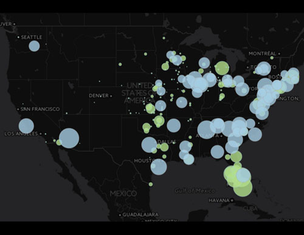

ABOUT THE MAPS
The maps highlighted here are the result of MAP671 and MAP672 classes taken in the NewMapsPlus Program at the University of Kentucky. These maps were really enjoyable to produce after learning the skills required. While not as colorful, if you would like to see some more maps that utilized these skills, and are populated by live veterinary laboratory data visit: UKVDL Epidemiolgy and click on any of the map labeled links. The maps for bovine and equine are dynamically updated as new cases come in. Enjoy!
Map of Breweries in North America
This map started with a spreadsheet of xy locations for breweries downloaded from POI Factory. The data is displayed as a hexbin heat map created in QGIS by using a spatial join method. One of my favorite maps in my first class MAP671.
Created in: QGIS
Data Source: POI Factory
See the Map:North American Breweries
Map of Cancer Rates by County in the United States
This web map was created in CartoDB by joining cancer profile tables to US Census Bureau Tiger line work. The map showcases custom labels and color schemes created using CSS and HTML within the CartoDB framework. The map interactivity allows the user to investigate cancer rates for all counties in the United States, and the counties with the highest and lowest rates of cancer are noted. Using SQL, the map was reprojected to the North Americal Albers Equal Area Conic projection to escape the ubiquitous Web Mercator projection
Created in: CartoDB QGIS SQL HTML CSS
Data Source: State Cancer Profiles
See the Map:Cancer Rates by County in the United States

Map of Appalachia
This web map was custom created in CartoDB by using US Census Bureau Tiger line county data and trimming it down to only the counties in Appalachia defined by The Appalchian Regional Commission. I made this map for work, to illustrate the counties we were serving. The map showcases custom labels and color schemes created using CSS and HTML within the CartoDB framework. The map interactivity allows the user to investigate the all the counties in Appalachia, and also see what counties in Appalachia were served by The University of Kentucky Veterinary Diagnostic Laboratory
Created in: CartoDB QGIS SQL HTML CSS
Data Source: UKVDL
See the Map:University of Kentucky Veterinary Diagnostic Lab Serves Appalachia
Historical Rabies Map for Kentucky
These are maps of historical rabies data from the state of Kentucky. The source of the data is Kentucky Department of Public Health for 1989-2015, and is now stored and maintained at the The University of Kentucky Veterinary Diagnostic Laboratory in the Epidemiology section. Kentucky Fish and Wildlife has also submitted their data from 1976-2015 to be included.Clicking on the county gives more detailed information, including positive and negative submissions as well as species by county. Multiple maps for your perusal.
Created in: CartoDB QGIS SQL HTML CSS
Data Source: UKVDL
See the Maps: Kentucky Rabies

Nuclear Plants Compared to Petroleum & Natural Gas
This map was created in MAP672: Programming for Web Mapping.
This map shows a comparison of nuclear power plants vs petroleum and natural gas. Nuclear power plants are light blue in color and will turn pale orange when highlighted, then a medium blue after you are done to keep track of which plants you have visited. Natural gas and petroleum power plants are light green and will turn pale yellow when highlighted, then turn a medium green after you are done to keep track of which plants you have visited. Clicking on the marker will tell you how much energy is produced at that location. Energy produced is expressed in MegaWatts.
Data Source: Energy Information Administration
See the Map:Nuclear Compared to Petroleum and Natural Gas Plants
See the Code at:GitHub
Environmentally Friendly Power Plants in the United States
This map was created in MAP672: Programming for Web Mapping. This map shows environmentally friendly power plants: nuclear, solar, wind and hydro power. This course was developed to help students in an introduction for web programming and javascript coding. These programs were written within a program called Brackets which was used alongside Github to store and present the maps.This proportional symbol map was created with data gathered from the Energy Information Administration. The point data gathered from the EIA was stored in a file and was added to the programming we wrote. We were then able to take that point data, change it, style it, and make the map interactive. All of the information we learned throughout this course was added to this map.
Data Source: Energy Information Administration
See the Map:Environmentally Friendly Power Plants
See the Code at:GitHub